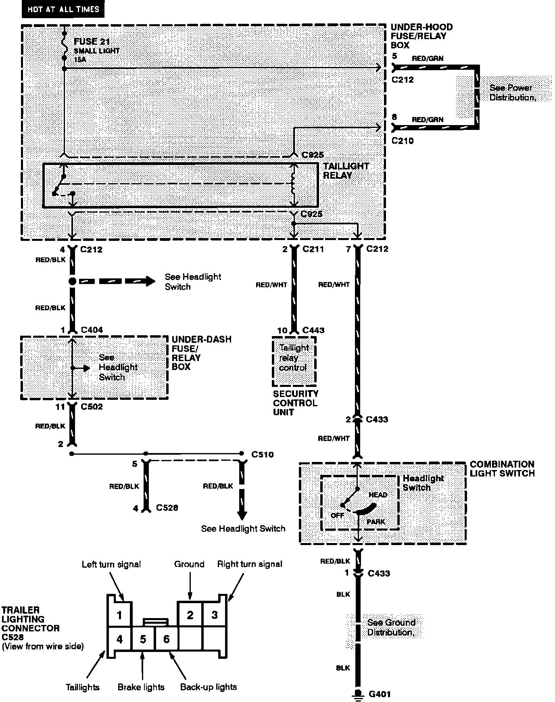
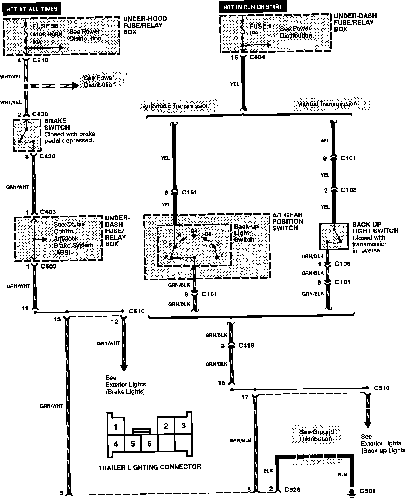
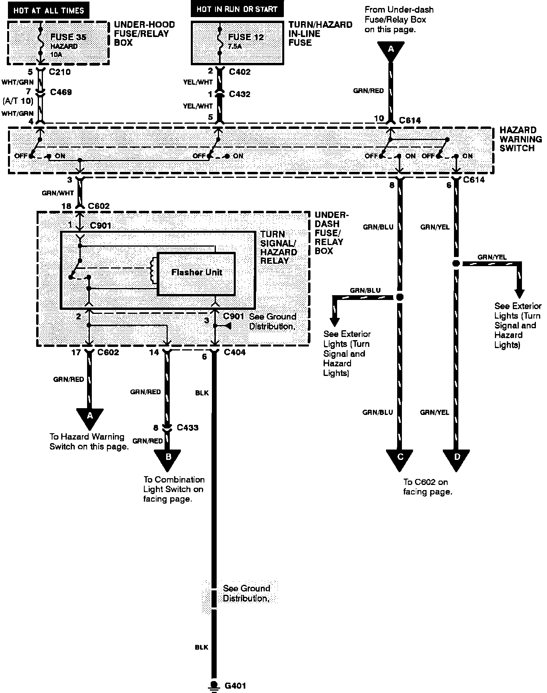
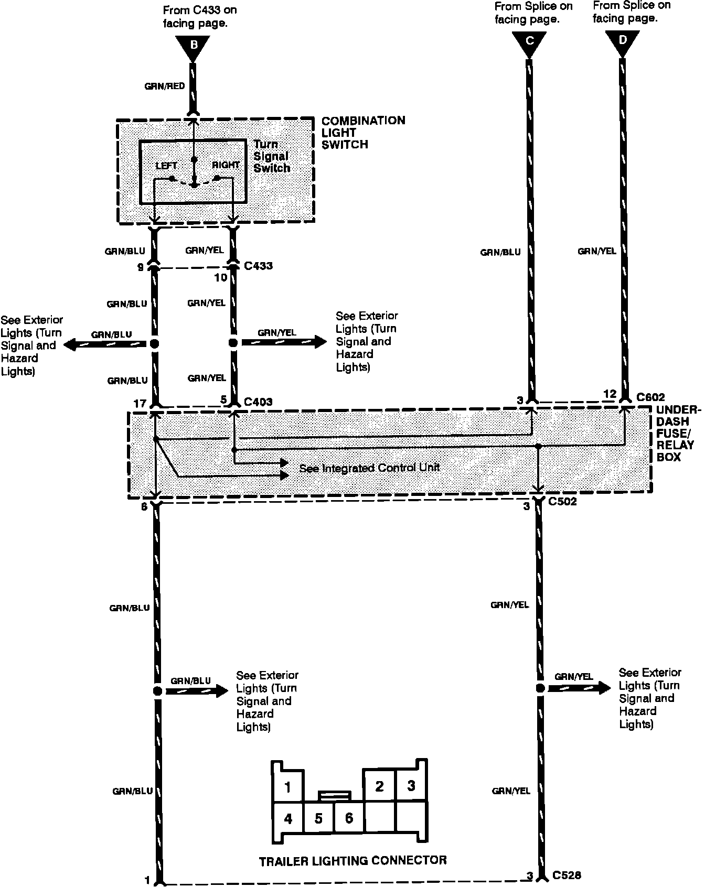

Electrical Diagrams
Trailer Lighting Connector: Taillights:

Trailer Lighting Connector: Brake, Back-up And Ground:

Trailer Lighting Connector: Turn Signal And Hazard Lamps:

Trailer Lighting Connector: Turn Signal And Hazard Lamps:
